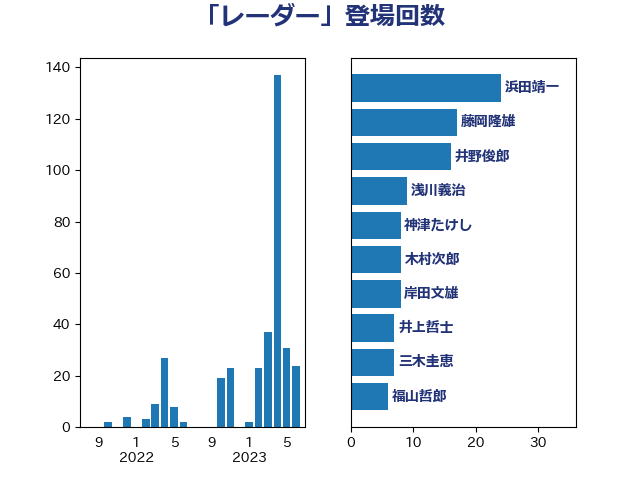

単語「レーダー」

| 穀田恵二 | 日本共産党 | 58 回 |
| 佐藤正久 | 自由民主党 | 37 回 |
| 岸信夫 | 自由民主党 | 26 回 |
| 伊波洋一 | 無所属 | 6 回 |
| 赤羽一嘉 | 公明党 | 5 回 |
| 岡本三成 | 公明党 | 4 回 |
| たがや亮 | れいわ新選組 | 3 回 |
| 井上哲士 | 日本共産党 | 3 回 |
| 井上英孝 | 日本維新の会 | 3 回 |
| 室井邦彦 | 日本維新の会 | 3 回 |
| 宮本徹 | 日本共産党 | 3 回 |
| 小野寺五典 | 自由民主党 | 3 回 |
| 杉久武 | 公明党 | 3 回 |
| 篠原豪 | 立憲民主党 | 3 回 |
| 緑川貴士 | 立憲民主党 | 3 回 |
| 萩生田光一 | 自由民主党 | 3 回 |
| 加藤鮎子 | 自由民主党 | 2 回 |
| 宮澤博行 | 自由民主党 | 2 回 |
| 浅田均 | 日本維新の会 | 2 回 |
| 浜地雅一 | 公明党 | 2 回 |
| 片山さつき | 自由民主党 | 2 回 |
| 福山哲郎 | 立憲民主党 | 2 回 |
| 茂木敏充 | 自由民主党 | 2 回 |
| 重徳和彦 | 立憲民主党 | 2 回 |
| 中西健治 | 自由民主党 | 1 回 |
| 井上信治 | 自由民主党 | 1 回 |
| 佐藤啓 | 自由民主党 | 1 回 |
| 國場幸之助 | 自由民主党 | 1 回 |
| 塩川鉄也 | 日本共産党 | 1 回 |
| 大塚耕平 | 国民民主党 | 1 回 |
| 太栄志 | 立憲民主党 | 1 回 |
| 安達澄 | 無所属 | 1 回 |
| 小宮山泰子 | 立憲民主党 | 1 回 |
| 小池晃 | 日本共産党 | 1 回 |
| 小熊慎司 | 立憲民主党 | 1 回 |
| 小西洋之 | 立憲民主党 | 1 回 |
| 山添拓 | 日本共産党 | 1 回 |
| 岡田克也 | 立憲民主党 | 1 回 |
| 岩本剛人 | 自由民主党 | 1 回 |
| 平将明 | 自由民主党 | 1 回 |
| 末松義規 | 立憲民主党 | 1 回 |
| 松野博一 | 自由民主党 | 1 回 |
| 泉健太 | 立憲民主党 | 1 回 |
| 浅川義治 | 日本維新の会 | 1 回 |
| 漆間譲司 | 日本維新の会 | 1 回 |
| 石川香織 | 立憲民主党 | 1 回 |
| 笠井亮 | 日本共産党 | 1 回 |
| 芳賀道也 | 国民民主党 | 1 回 |
| 高木かおり | 日本維新の会 | 1 回 |
| 高木啓 | 自由民主党 | 1 回 |
| 鬼木誠 | 立憲民主党 | 1 回 |